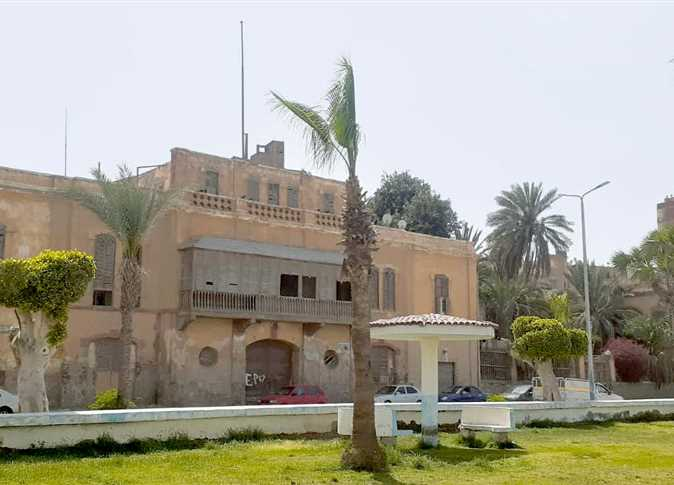

Historic house
Messageri House
A landmark building on the old harbour, built by a French maritime company during the digging of the Suez Canal.
Egypt • Red Sea • Suez Canal
Historic houses, religious landmarks, beaches and promenades — all gathered in one coastal city at the gate of the Suez Canal.
Highlights
Start with these signature experiences that bring together the sea, the canal and the story of the city.
A landmark building on the old harbour, built by a French maritime company during the digging of the Suez Canal.
A modern museum overlooking the canal, showcasing the history of Suez from pharaonic trade routes to the modern canal.
Walk along the Gulf of Suez, between local beaches and sea promenades with views of ships entering the canal.
Historic sites & museums
Discover heritage buildings and open-air sites that witnessed key moments in the story of Suez and the October War.
Overlooking the old port, this European-style house once served as a navigation and signal point for ships approaching Suez.
 Historic palace
Historic palace
An elegant villa in Port Tawfiq facing the sea, reflecting the architectural style of Suez’s golden era.
An open-air war site near Ayoun Mousa that witnessed dramatic battles during the October War and overlooks the Gulf.
Religious landmarks
Mosques and churches reflect a rich spiritual heritage across Suez.
 Mosque
Mosque
A key spiritual symbol for the people of Suez — so iconic that the city is known as “The City of Al-Ghareeb”.
 Church
Church
A restored historic church linked to the Greek community that settled and worked around the canal.
One of the most important Christian churches in Suez, located in Al-Arbaeen district.
Beaches & waterfront
Soft beaches, palm-lined promenades and sea views stretching along the Gulf of Suez.
A popular local beach where families enjoy swimming and sea breezes facing the Gulf of Suez.
A waterfront walk at the meeting point of the sea and canal, perfect for sunset walks and ship-spotting.
A relaxing palm-lined stretch where you can walk, cycle and enjoy the open sea views.
Clubs & lifestyle
Suez is home to historic football clubs, petroleum clubs and family-friendly social centres.
A beloved football club representing the spirit and passion of Suez fans.
 Petroleum club
Petroleum club
A sports and social hub for families linked to the petroleum sector in Suez.
A community sports club hosting local matches and youth activities throughout the year.
A friendly family club with green spaces and spaces for kids, located in the heart of Suez.
Marine activities
Boat trips, yacht marinas and photography spots at the southern entrance of the Suez Canal.
A modern waterfront venue offering stunning sea views and a unique marina-style experience in Suez.
Join a boat tour near the southern entrance of the canal and capture close-up views of giant passing ships.
Stories from Suez
Discover local seafood, everyday life on the corniche and the stories told by the people of Suez.
 Food
Food
Enjoy simple, authentic seafood restaurants with views of the water and passing ships.
Listen to stories about ships, workers and families who built their lives around the canal.
Plan your trip
Easy access from Cairo and nearby cities makes Suez ideal for a one-day escape or a full weekend.
About 1.5 hours by car from Cairo via Suez Road, with buses and organized day trips available.
October to April offer comfortable weather for outdoor walks, festivals and sea views.
Morning at the museum, afternoon heritage walk, then sunset on the promenade and dinner by the sea.
Interactive map
Explore beaches, promenades, heritage sites, religious landmarks and clubs. Click on the markers or zoom around the city.